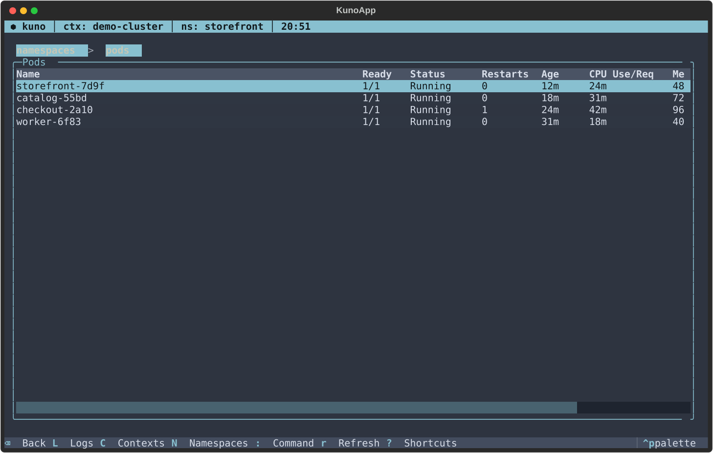
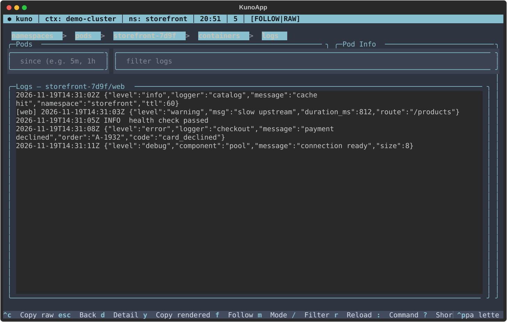
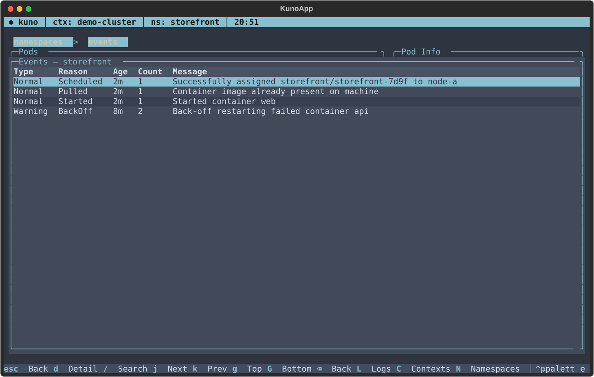

Escolha um pod.
Navegue por pods e workloads, mova com j/k e abra o recurso selecionado com Enter.


Uma tecla.O Kuno é uma interface de terminal para Kubernetes feita para o teclado. Encontre um recurso, acompanhe os logs e inspecione o que importa sem sair do terminal.
uv tool install kuno
Depois é só rodar kuno no terminal, com um kubeconfig à mão.
Uma prévia pequena, só local. Use j/k ou as setas, pressione Enter ou troque de aba. O cluster de exemplo é fictício; nada se conecta ao Kubernetes.
Este é um mock no navegador, com dados fictícios: não é um cluster real.
Percorra os detalhes de Kubernetes que você mais usa, sem trocar de ferramenta nem perder o lugar.
Navegue por pods e workloads, mova com j/k e abra o recurso selecionado com Enter.
Abra os logs de um pod ou workload, filtre a saída e siga as linhas novas no mesmo fluxo de teclado. A tecla m alterna entre o log cru e o formatado: se a linha é JSON, o Kuno separa timestamp, nível, categoria e campos; se não é, passa intacta.


Leia um manifesto, veja os eventos ou abra o describe quando um recurso pedir uma olhada mais de perto.


O Kuno é open source, sob licença Apache-2.0. O pacote fica no PyPI e o código no GitHub.